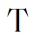

Interesting articles of world newspapers
Biden’s Classified Documents: A Timeline of What We Know So Far
By Anisha Kohli / January 14, 2023 3:47 PM EST
Classified documents dating back to the Obama administration keep turning up in President Joe Biden’s personal workspaces, beginning with 10 documents found in November, days before the election, to six additional documents discovered at the President’s home in Delaware this week.
The Justice Department has opened an investigation into whether the classified documents—which are supposed to remain in secure locations tracked by the National Archives—were ever mishandled, and if any federal laws were violated. Details about how many total classified documents were discovered and their contents remain unclear.President Donald Trump
The situation is eerily reminiscent of former President Donald Trump’s possession of classified documents first discovered at his Florida home in June. Biden condemned Trump’s actions and supported the special counsel investigation into the former president’s handling of the documents, which began just two weeks before the first batch of Biden’s classified documents were discovered.
The timing of the discoveries also raises questions about why the investigations—which began one day after the midterm elections that the Democratic party was favored to lose—were kept quiet for so long. It wasn’t until last week when news investigations revealed the discoveries that the White House publicly acknowledged the case.
“People know I take classified documents and classified materials seriously,” Biden said at a briefing on Thursday, adding that he was “cooperating fully and completely with the Justice Department’s review.”
Here’s the timeline of events:
November 2022
On November 2, Biden’s private attorneys unexpectedly discovered the first collection of about 10 classified documents from the Obama-Biden administration in a locked closet at the Penn Biden Center office in Washington D.C—a think tank that Biden founded. Biden began working at the office occasionally in 2017 after his vice presidency ended.
Following statutory requirements, the documents were voluntarily turned over to the National Archives and Records Administration (NARA). On November 4, NARA informed the Justice Department (DOJ) about the revelation. Midterm elections, where the Democratic party was favored to lose its Congressional majority, took place a few days later on November 8.
On November 9, the FBI began an inquiry into whether any laws were broken and if classified information was mishandled. Several days later on November 14, U.S. Attorney General Merrick Garland assigned John Lausch, U.S. attorney for the Northern District of Illinois, to the case to determine if a special counsel was needed.
December 2022
The following month, Biden’s personal counsel found additional classified documents in the president’s private library attached to his garage during an inspection of his home in Wilmington, Delaware on December 20. The attorneys informed Lausch about the findings and handed the documents over the following day.
January 2023
A few days into the new year, Lausch filled Garland in on the investigation on January 5 and recommended that the DOJ appoint a special counsel, who would extensively investigate and potentially prosecute any wrongdoing.
On January 9, CBS News was the first to report on November’s discovery of classified documents, bringing the case to public attention. The White House then publicly confirmed the inquiry, saying that the administration was cooperating with the DOJ and NARA, but didn’t mention the additional classified documents found in December.
“The White House is cooperating with the National Archives and the Department of Justice regarding the discovery of what appear to be Obama-Biden Administration records, including a small number of documents with classified markings,” White House lawyer Richard Sauber said in a statement.
On January 10 at a news conference from Mexico, Biden said that he was surprised to learn about the classified documents, explaining that his team helped him set up his personal office after his vice presidency ended. The White House asserted that it was an oversight and that Biden’s team acted immediately to hand over all classified documents upon their discovery.
During another inspection of Biden’s home on January 11, his personal counsel found one more classified document stored in a room adjacent to the garage. The lawyers informed the DOJ about the latest uncovering the next day, on January 12. These documents were in addition to the ones found there in December.
That afternoon, Garland announced the appointment of Robert Hur, a Trump-era U.S. attorney for the district of Maryland, as special counsel. “The extraordinary circumstances here require the appointment of a special counsel for this matter,” Garland said at the briefing, also mentioning the second batch of classified documents obtained in December.
Later that day, Biden’s team found an additional five classified documents at his home in Wilmington. The White House shared this discovery on January 14.
“The President directed his personal attorneys to be forthcoming and fully cooperative,” Bob Bauer, the president’s personal attorney, said in a statement to the press on Saturday. “The President’s personal attorneys have attempted to balance the importance of public transparency where appropriate with the established norms and limitations necessary to protect the investigation’s integrity.”
MORE MUST-READS FROM TIME
- How 'Beige' and Aesthetic Took Over TikTok
- How India Became the Most Important Country for the Climate's Future
- Why Rapid COVID-19 Test Results Are Getting More Confusing
- Inside the Making of Netflix's New Tennis Docuseries
- A New Tourist Train in Mexico Will Destroy Indigenous Land and Livelihoods
- 9 Ways to Squeeze in More Steps Every Day
Prince Harry defends tell-all memoir in furious ITV interview
King, queen consort and Prince William all criticised as Harry says silence ‘allows the abuser to abuse’
Prince Harry on why he wrote memoir: 'I don't want history to repeat itself' – foto
Caroline Davies, and Ed Pilkington New York | Mon 9 Jan 2023 01.55 GMT
rince Harry launched a broadside at the king, the queen consort, his brother and other royals in a furious ITV interview in which he defended his revelatory memoir, claiming that remaining silent “only allows the abuser to abuse”.
In excerpts from his book, Spare, read aloud during an interview with ITV’s Tom Bradby on Sunday night, Harry wrote that his interests had been “sacrificed” to Camilla’s “PR altar”.
Asked if he was “pretty consistently scathing” about his stepmother and the press, Harry replied: “Scathing? There’s no part of any of the things that I’ve said are scathing towards any member of my family, especially not my stepmother. There are things that have happened that have been incredibly hurtful, some in the past, some current.”
He accused the royal family of “a really horrible reaction” on the day of the Queen’s death, saying the family was on the “back foot” and he had witnessed “leaking and planting”. His words came after it was reported he claimed in his memoir that Meghan was “not welcome” at Balmoral.
In the first of several interviews to be broadcast before the book’s publication day, Harry was asked if his interests had been sacrificed for those of his father, when it came to the press.
Explaining the royals’ relationship with the press, Harry said: “I love my father, I love my brother, I love my family.” He had no intention of hurting or them, he said. But regarding the tabloid press, he said “certain members have decided to get in bed with the devil” to rehabilitate their own images.
That was their choice, he said, adding: “But the moment that rehabilitation comes at the detriment to others, me, other members of my family, that’s where I draw the line.”
He spoke of royals competing for the limelight. William and Kate, he said, had suffered from this “from my father and stepmother, or their office”. He thought, as the “spare” to the heir, everything would be fine with him and Meghan.
“How wrong I was. The very thing that William and Kate had experienced from Pa and Camilla happened to us, and happened from William and Kate’s office as well,” he said.
An excerpt from his audiobook was played in which Harry said he and William told Charles: “We endorse Camilla. Just please don’t marry her, just be together, Pa.”
Harry continues: “He didn’t answer. But she answered. Straight away. Shortly after our private summits with her, she began to play the long game. A campaign aimed at marriage, and eventually the crown, with Pa’s blessing we presumed.”
“Stories began to appear everywhere in all the papers about her private conversations with Willy. Stories that contained pin-point accurate details, none of which had come from Willy, of course. They could only have been leaked by the one other person present.”
Excerpts also revealed that, as the relationship between Harry and William deteriorated, they met Charles to discuss the situation after the Duke of Edinburgh’s funeral. During their exchange, William swore “on Mummy’s life” that he just wanted Harry to be happy.
“For nearly 25 years we’d reserved that soul-crushing vow for times when one of us needed to be heard to be believed quickly,” “ It stopped me cold, as it was meant to. Not because he’d used it. But because it didn’t work. I simply didn’t believe him.” Not because he’d used it. But because it didn’t work. I simply didn’t believe him.”
Harry said he wanted reconciliation, but with “accountability.”
Asked to justify writing the book, and disclosing private conversations with his family, Harry said: “The level of planting and leakings from other members of the family means that, in my mind, they have written countless books, certainly millions of words have been dedicated to trying to trash my wife and myself to the point where I had to leave my country.”
Harry denied he and Meghan had accused members of the royal family of racism in their Oprah Winfrey interview, saying: “The British press said that.” Referring to the well-reported remarks over the colour of their son Archie’s skin, he described it as unconscious bias, not racism. He also said the incident involving charity founder Ngozi Fulani and Lady Susan Hussey was “a very good example of the environment within the institution.”
Asked if William and Kate had not got on with Meghan “almost from the get-go”, Harry replied: “Yeah, fair.” Stereotyping had caused a “bit of a barrier”, he said, adding: “American actress, divorced, biracial.”
Harry also spoke about “beardgate”: a bizarre week-long row in which Harry revealed he had to ask the Queen if he could keep his beard for his wedding – a no-no according to military rules, apparently. The Queen agreed, after Harry explained his beard was “a shield to my anxiety.”
But he claimed William later tried to order him to shave it off. It was an “heir/spare thing”, Harry said and also, he thought, because William had himself been asked to shave off a beard while in uniform.
Harry admitted to feeling “some guilt” when walking among the crowds outside Kensington Palace after his mother’s death, and feeling the mourners’ tears on his hands when he shook them, saying the only time he cried was at her burial.
Harry also revealed how his father blamed himself for his son’s struggles. Narrating an extract from the book, he read: “Over dinner one night at Highgrove, Pa and I spoke at some length about what I’d been suffering.
“I gave him the particulars, told him story after story. Towards the end of the meal he looked down at his plate and said softly: ‘I suppose it’s my fault. I should have got you the help you years ago.’
“I assured him that it wasn’t his fault, but I appreciated the apology.”
The theme of apologising cropped up again when the main US interview with Harry to mark publication of his book was broadcast by CBS’ 60 Minutes on Sunday night. Asked by journalist Anderson Cooper whether the rupture within the royal family could be healed, Harry replied: “Yes. The ball is very much in their court, but you know, Meghan and I have continued to say that we will openly apologise for anything that we did wrong … There needs to be a constructive conversation, one that can happen in private that doesn’t get leaked.”
Cooper asked him directly whether he was in communication with William. “Currently, no,” he said.
Asked whether he spoke to his father, Harry replied: “We aren’t, we haven’t spoken for quite a while. No, not recently.”
In addition to the 60 Minutes interview, there will be further US media appearances with Michael Strahan of Good Morning America on Monday and Stephen Colbert on the Late Show on CBS on Wednesday morning UK time.
Kensington Palace declined to comment on the ITV interview.
The best comet of 2023 may soon be visible to the naked eye
Comet C/2022 E3 (ZTF) is now sailing through the inner solar system. Here’s everything you need to know to track this celestial visitor.
By Alison Klesman / Published: Tuesday, January 10, 2023
Comet C/2022 E3 (ZTF) glows green and shows off a stubby tail against the dark background sky in this shot, which totals 44 minutes of exposure time with a William Optics Redcat 51 and ASI2600MC.
Foto: Dominique Dierick (Flickr)
The year is off to a great start for comet hunters, as what could be the best comet of 2023 is now set to take center stage in January and February. Comet C/2022 E3 (ZTF) will make its closest approach to the Sun on Thursday, Jan. 12. Then, after zipping around the Sun, it will make its closest approach to Earth on Wednesday, Feb. 1.
Here’s everything you need to know to view Comet C/2022 E3 (ZTF) as it treks through the sky.
Where did Comet C/2022 E3 (ZTF) come from?
Comet C/2022 E3 (ZTF) was first discovered in March 2022 by the Zwicky Transient Facility (ZTF), which scans the entire Northern Hemisphere sky once every two days from Palomar Observatory in California. You may have noticed many other comets have the acronym ZTF in their names, too. That's because they were discovered by the same facility
C/2022 E3 began its long journey in the far outer reaches of the solar system, within the Oort Cloud. The comet will make its closest approach to the Sun, or reach perihelion, on Jan. 12, when it comes within 1.1 astronomical unit of our star. (One astronomical unit, or AU, is the average Earth-Sun distance.)
Although being closer to the Sun can make some comets intrinsically brighter, at perihelion, C/2022 E3 will still sit 0.71 AU from Earth, meaning it likely won't reach naked-eye visibility at this time.
After rounding the Sun, C/2022 E3 will continue to grow brighter through the end of the month. The comet's brightness is predicted to peak around Feb 1, when it makes its closest approach to Earth by passing within about 0.28 AU of our planet. At this point, many observers and astrophotographers hope C/2022 E3 will reach naked-eye magnitudes as it skims through a particularly rich region of the sky near the northern pole, setting the scene for some gorgeous photos.
Even at its brightest, however, Comet C/2022 E3 (ZTF) is not expected to form a bright, long tail that's visible without a telescope. Still, even without a tail, the comet will be a memorable sight. Plus, comets can always surprise us with unexpected outbursts, so it’s worth following C/2022 E3's progress to see what it will do!
How to see comet C/2022 E3 (ZTF)
Comet C/2022 E3 (ZTF) reaches perihelion on Jan. 12. Around 4 A.M., you can find it high in the northeast, floating in the constellation Corona Borealis.
Alison Klesman (via TheSkyX)
Currently visible to observers in the Northern Hemisphere, the best time to view C/2022 E3 is in the early morning just a few hours before dawn. The comet's brightness now stands at about magnitude 7, making it easily visible through binoculars or any small telescope. And if the comet brightens to magnitude 6 or better, C/2022 E3 will be visible to the naked eye under good conditions.
As the comet approaches the Sun this week, a waning gibbous Moon dominates the early-morning sky, cutting down on visibility. Nonetheless, it’s worth trying your luck tracking it down with binoculars or a telescope.
Try zooming in on the green-hued fuzzball as it springs from its current residence in Corona Borealis up through Bootes and Draco, passing through Ursa Minor near the cup of the Little Dipper at the end of the month. As C/2022 E3 swings through the inner solar system and passes Earth, it will appear to cover large swaths of the sky each day, tracking close to the North Star, Polaris. By the time C/2022 E3 passes near Earth in February, the comet will lie in Camelopardalis.
This week, C/2022 E3 rises in the northeast around midnight, climbing higher in the sky as dawn approaches. That makes it best for early-morning observers. However, if you’re willing to stay up late next week, starting on Jan 16, you can try spotting the comet before the Moon rises around 2 A.M. local time. (Note that C/2022 E3 won’t be very high in the sky at this point, so you’ll want to get yourself to high ground and opt for a viewing location with a clear view of the northeastern horizon.
By Jan. 18, without the Moon to interfere, C/2022 E3 will rule the early-morning sky. It will then be traveling through northeastern Bootes headed for Draco. Along the way, on Jan. 23, the comet will pass northeast of the galaxies M102 and NGC 5907. One day later, any broad tail the comet might sport will quickly narrow (within about a day) as the orbital planes of the comet and Earth cross. Just as quickly, however, the tail will appear to spread back out after the crossing.
On the last day of January, C/2022 E3 is just 11.5C from Polaris and moving at a speedy clip. The comet will cover about 12" per minute, forcing astroimagers to opt for shorter exposures if they seek to capture any sharp details.
Comet ZTF covers vast swaths of sky each night later this month, passing near Polaris before heading into Camelopardalis.
Astronomy: Roen Kelly
Shortly after C/2022 E3 makes its closest approach to Earth, the comet will become visible in the Southern Hemisphere. The comet will then fade over time as it heads away from the Sun toward the outer solar system. And scientists aren’t yet sure whether or not it will ever return.
To follow C/2022 E3 through the skies and discover other timely targets and events, be sure to check out our Sky This Week column, updated every Friday by 9 A.M. CT.
NASA Is Testing A New Way To Crash Land On Mars
Engineers have safely landed spacecraft on Mars nine times. But now they're investigating whether crash landing is the best way to reach the Red Planet.
By Caitlyn Buongiorno / Oct 27, 2022 9:00 PM
SHIELD, seen here in this artist's concept, is a potential alternative approach to the costly entry, descent, and landing strategies currently use by NASA to get spacecraft safely to the surface of Mars. (Credit: California Academy of Sciences)
NASA has always taken great care when it comes to touching down on Mars, relying on parachutes, airbags, and even jetpacks to ensure their spacecraft safely reach the surface. This method has worked for them nine times in the past. But now, an experimental lander is looking to try a more hard-hitting approach.
Instead of slowing the craft’s descent, SHIELD — which stands for Simplified High Impact Energy Landing Device — would act like the crumple zone of a car, absorbing much of the energy of a hard impact. This method would work thanks to SHIELD's accordion-like, collapsible base.
SHIELD, seen here, would use a collapsible base to absorb most of the energy of a hard impact. (Credit: NASA/JPL-Caltech)
If it Works For Earth…Why Not Mars?
The concept for SHIELD originated during planning for NASA’s Mars Sample Return campaign. Since the Perseverance rover landed on Mars in February 2021, it has been busy collecting rock samples in metal tubes, storing them in its belly for now.
Once the team decides exactly where and when the samples will be picked up for return to Earth, Perseverance will deposit its stomach contents at designated sample cache depots. From there, a Sample Retrieval Lander would pick them up, and the Mars Ascent Vehicle — the first rocket ever to launch of the surface of Mars — would transport them to orbit around Mars. Finally, the Earth Return Orbiter would snag the sample container from Mars orbit and venture back home, where NASA plans to safely crash land the sample container in a deserted location.
Preparing for the final step in this process made engineers wonder: If such a hard landing could work on Earth, could it work on Mars as well?
To test the idea, the team placed a smart phone, radio, and accelerometer in their prototype SHIELD and hoisted it some 90 feet (27 meters) to the top of a drop tower at the Jet Propulsion Laboratory. Using a bow launch system — essentially a giant sling — they then hurled the prototype and its contents at a steel plate at roughly 110 mph (177 km/h). That’s around the speed at which a lander would slam into the martian surface after being slowed by Mars' tenuous atmosphere.
Following the mock crash landing, all the electronic devices inside SHIELD were left largely unscathed, with only some superfluous plastic components damaged. And while SHIELD did flip after its initial impact, the team suspects this was due to the metal sheet it struck rather than the lander's design.
It was a promising first step, leaving the engineers pondering what else might be possible. “We think we could go to more treacherous areas, where we wouldn’t want to risk trying to place a billion-dollar rover with our current landing systems,” said Lou Giersch, SHIELD’s project manager, in a JPL press release.
The Ground’s the Limit
Currently, NASA has a limited number of safe martian landing zones identified and available for use. After all, they don’t want to build a billion-dollar rover and send it to Mars, only for it to fail its landing due to avoidable treacherous terrain.
But without the need for the harrowing (and costly) entry, descent, and landing process currently used, SHIELD would open new areas of Mars to explore. Not to mention, “if we can do a hard landing on Mars,” said Velibor Ćormarković, SHIELD team member, “we know SHIELD could work on planets or moons with denser atmospheres.”
Morgan Freeman Joins Star-Studded Cast of New Paramount+ CIA Drama 'Lioness'
The 85-year-old Academy Award winner will play a U.S. secretary of state in the Taylor Sheridan-helmed drama, which also stars Nicole Kidman and Zoe Saldaña
By Anna Lazarus Caplan | Published on January 12/2023
Morgan Freeman. Photo: Nigel Parry-CPi
Add Morgan Freeman to the Lioness lineup!
The Oscar winner, 85, is joining the cast of the Paramount+ CIA drama, the studio announced on Friday. Freeman will be playing Edwin Mullins, the United States secretary of state in the show.
Based on a real CIA program, Lioness will follow a young Marine named Cruz Manuelos (Laysla De Oliveira) as she joins the CIA's Lioness Engagement team and attempts to take down a terrorist organization by befriending the daughter of one of the members.
In addition to Freeman and De Oliveira, the Taylor Sheridan-helmed series will star Nicole Kidman, Zoe Saldaña, Jill Wagner, Dave Annable, LaMonica Garrett, James Jordan, Austin Hébert, Hannah Love Lanier, Stephanie Nur and Jonah Wharton
RELATED: Nicole Kidman Set to Star in Yellowstone Creator's Upcoming CIA Drama Lioness
Saldaña will play Joe, the station chief of the Lioness program tasked with training, managing and leading her female undercover operatives.
Meanwhile, Kidman — whose casting was just announced last week — will take on the character of Kaitlyn Meade, a veteran CIA Senior Supervisor who struggles with her professional and personal life balance, as well as mentoring someone who is eerily following in her same steps.
PHOTO: Christopher Polk/Getty
The series is created by Yellowstone's Sheridan, who stepped in for showrunner Thomas Brady after "creative differences led to the producers and Brady agreeing to part ways amicably," Variety reported.
Kidman, Saldaña, Sheridan and Wagner are executive producers on the project, along with David C. Glasser, Ron Burkle, Bob Yari, David Hutkin, Geyer Kosinski, Michael Malone and John Hillcoat.
Never miss a story — sign up for PEOPLE's free daily newsletter to stay up-to-date on the best of what PEOPLE has to offer, from juicy celebrity news to compelling human interest stories.
Most recently seen in his Emmy-nominated guest star role in The Kominsky Method, Freeman's recent television credits include the sci-fi anthology series Solos and the children's program The Electric Company.
The Shawshank Redemption star has also served as an executive producer on Madam Secretary, The Killing of Kenneth Chamberlain and Princess of the Row.
The new year promises to be a busy one for the octogenarian. In March, the Million Dollar Baby star returns to the big screen in A Good Person, which is directed by Zach Braff and stars his former girlfriend, Florence Pugh.
RELATED: Florence Pugh Stars in Emotional First Trailer for A Good Person Directed by Ex Zach Braff
Freeman plays Daniel, who befriends Pugh's character Allison after her involvement in "an unimaginable tragedy that [takes Daniel's] daughter's life," according to an official synopsis.
Freeman is also set to star in the feature films, Paradise Highway and Muti, later this year.
The Glorious Age of Adele
First came a brutal pandemic year. Then a career low point. In an intimate new interview, Adele talks about the artistic and personal rebirth that has her as happy as she’s ever been.
BY EMMA CARMICHAEL AND PHOTOGRAPHED BY MARIO SORRENTI. STYLED BY GEORGE CORTINA. PUBLISHED: AUG 15 2022
Adele wears a repurposed shearling coat from Pologeorgis (in accordance with the ELLE International fur-free charter). Dress, Fendi, $2,650. Rings, Cartier, from $1,420. Tights, Falke, $32.
Mario Sorrenti
ele’s career does not have much by way of low points. The British singer- songwriter has been on a steady, galactic trajectory since the 2008 release of her celebrated debut album, 19. She has won 15 Grammys and, with her devastating vocal power and narrative command, has achieved such celebrity that her name has become shorthand for heartbreak itself. Last November, after a six-year hiatus, Adele released her fourth studio album, 30, which became the best-selling album of the year in the U.S.
But sitting in her Beverly Hills kitchen one blistering afternoon in June, Adele can easily identify her own professional nadir: It was the morning of January 20, when she uploaded a teary video to Instagram to inform her fans she was canceling her Las Vegas residency at the Colosseum at Caesars Palace, which was set to premiere the following evening. “It was the worst moment in my career, by far,” she says, within 10 minutes of us sitting down. She hasn’t spoken publicly about the debacle in the five months since, even as rumors about production issues and set disagreements swirled, and she’s eager to address it right away. “By far. I was so excited about those shows. It was devastating.”
Before Adele posted the video, she’d been up for more than 30 hours straight, tormenting herself over a choice she’d known for a week was the right one to make. But her team, already ravaged by absences from the Omicron surge, felt they’d accomplished more under tighter deadlines before. And there was so much on the line: months of planning and rehearsals, her crew’s and band’s livelihoods, and untold dollars in investment. Not to mention that many thousands of ticket holders had planned travel around birthdays, anniversaries, and graduations to come to Vegas and see her. Adele was terrified of letting everyone down. But she also knew in her bones that something about the show did not feel authentic to her. “There was just no soul in it,” she says. “The stage setup wasn’t right. It was very disconnected from me and my band, and it lacked intimacy. And maybe I tried too hard to give it those things in such a controlled environment.”
Coat, Celine by Hedi Slimane, $3,500. Dress, Fendi, $2,650.
Mario Sorrenti
At a dress rehearsal the night before she announced the cancellation, she got frustrated enough that, during the first song, she walked to the end of the 15,700-square-foot stage, sat down, and crossed her legs over the side. Then she pulled her mic away and started singing a cappella to the mostly empty, 4,300-plus-seat Colosseum. Even unplugged, she says, “they could hear me up at the top.” As she sang, Adele looked out into the first few rows and realized it was exactly this feeling she’d been missing: an intimate and unpretentious moment with a stardom that has, over 15 years and more than 120 million albums sold worldwide, become its own life force.
“This would be the best part of the show,” she remembers thinking. “For me, and for you. This is what I want,” she continues, motioning to an imagined small audience in front of her kitchen table, the proximity of a fan’s beating heart. “And none of that—” she gestures behind her, to the idea of a Vegas stage with its trappings and special effects—“has that.” The next morning, she called off the shows.
It was “brutal,” she says, but it was also a choice in line with what she is known for: a generational talent who has earned the right to engage with her fame on her own terms, and share her art and self with the world only when she feels most ready to do it. “With her, everything’s about authenticity,” says Jonathan Dickins, who has been her manager since she was 18 years old. “For her to go out and perform a show she’s not happy with would be a lie to the fans.”
Top, Givenchy, $1,455. Skirt, Marc Jacobs. Tights, Fogal, $44. Rings, worn throughout, Cartier, from $1,420. Sandals, Saint Laurent by Anthony Vaccarello, $1,190.
Mario Sorrenti
“The first couple of months was really, really hard,” Adele says. “I was embarrassed. But it actually made my confidence in myself grow, because it was a very brave thing to do. And I don’t think many people would have done what I did. I’m very proud of myself for standing by my artistic needs.”
 hen we
meet at her home in
June, Adele is a couple of
weeks removed from her first
proper return to the stage in
five years.
She is relaxed and
rested—normally a terrible
sleeper, she’s been getting a
luxurious nine hours a
night—and dressed down in
black sweats and a black Nike
Jordan T-shirt, hair back and
face free of
makeup. She greets me
brightly and fixes us both
iced coffees with almond milk
while asking polite
questions about Vermont,
where I grew up. (To my
surprise, she remembers
passing through the state
for a radio interview when
she was promoting 19.)
hen we
meet at her home in
June, Adele is a couple of
weeks removed from her first
proper return to the stage in
five years.
She is relaxed and
rested—normally a terrible
sleeper, she’s been getting a
luxurious nine hours a
night—and dressed down in
black sweats and a black Nike
Jordan T-shirt, hair back and
face free of
makeup. She greets me
brightly and fixes us both
iced coffees with almond milk
while asking polite
questions about Vermont,
where I grew up. (To my
surprise, she remembers
passing through the state
for a radio interview when
she was promoting 19.)
The next day, she would fly to New York with her boyfriend of a year, the sports agent Rich Paul, where they had plans to attend the wedding of Cleveland Cavaliers forward-center Kevin Love. Then she’d return home to London to take her nine-year-old son, Angelo, to see Billie Eilish at The O2. Angelo, whose father is her ex-husband, Simon Konecki, is “obsessed” with Eilish, Adele says. “He’ll go up to [his room] after school and read all the lyrics and then he’ll want to discuss them.” At the start of July, she would make her triumphant return to the stage, with two headlining nights at BST Hyde Park, an annual summer festival in London. The rest of the headliners were all men, and in response, Adele assembled an all-women bill for her shows, including Kacey Musgraves and a childhood favorite, the R&B singer Gabrielle. “London crowds are the best,” Adele says, grinning in anticipation. “They’re gonna be drunk before I even go on. We’re all gonna have the time of our lives.”
Coat, Loro Piana, $6,930. Slip, Agent Provocateur, $310.
Mario Sorrenti
- BEAUTY TIP: Rim your lash line with Chanel Le Crayon Yeux Precision EyeDefiner in Noir Black($32). Use shades from Chanel Les 4 Ombres Multi-Effect Quadra Eyeshadow in Modern Glamour ($62) for an Adele-like smoky winged look.
At some point after that, she planned to re-announce her much-anticipated shows in Vegas. Weekends With Adele will run at the Colosseum beginning toward the end of 2022, with nightly shows on Friday and Saturday each week. The announcement will mark an overdue culmination for 30. Aside from two pretaped television specials (one in the U.S. and one in the UK) that aired the month of 30’s release, until her Hyde Park shows, Adele had scarcely performed any of the songs. After the Vegas news was out, she largely retreated from the public eye.
Outside of her songwriting, which—with searing hits like “When We Were Young,” “Someone Like You,” and “Hello”—is vulnerable to the point of narrative purgation, Adele has always been known as a private person. She does not have the password to her official Instagram account, which has more than 50 million followers, and rarely updates it. Like her mononymous peer Beyoncé, she is methodical about the press she chooses to participate in. When she returned to L.A. from Vegas in January, someone had tipped off the paparazzi about her flight, so there were cameras waiting at Paul’s house when she arrived. “I couldn’t even sit in the garden and be on the phone with my friends,” she says. “I was just trapped inside.” For a while, she had used a secret Twitter account to occasionally lurk her mentions, but as frustrated fans began to flood her social media accounts with critical comments about the abrupt announcement, she deleted it. “I was embarrassed,” Adele says, grimacing at the memory. “I went into hiding.”
As she licked her wounds, she more or less stopped promoting the album, afraid that doing so would make it seem like she didn’t care about the canceled shows. (As a result, she has at least one unreleased music video for 30 in the queue.) “I didn’t want anyone to think I weren’t trying my best,” she says, her voice getting quiet. “And I was.”
“I was embarrassed [to cancel the shows]. But it actually made my confidence in myself grow, because it was a very brave thing to do. I’m very proud of myself for standing by my artistic needs.”
She ventured out for a performance of 30’s standout power ballad “I Drink Wine” at the BRIT Awards in London. She wore a custom Valentino chiffon dress embroidered with lime sequins and sat on top of a piano, and to her surprise, no one booed. “I nearly cried at the end of my performance,” she remembers. “It felt strange receiving so much love when I’d let people down.”
The Colosseum stage is massive—its proscenium alone is reportedly 120 feet wide, almost half the length of a football field—and it initially posed issues for Adele, whose set designs tend to be understated and elegant. A planned water feature element, for example, “looked great for a couple of songs, and then didn’t do anything. It was just there.”
In an email, the legendary Bette Midler, who had her own residency at Caesars from 2008 to 2010, called the sheer size of the stage “absolutely terrifying.” She was supposed to make her grand entrance on a custom pile of Louis Vuitton luggage, but when it arrived during rehearsals, it felt “like Spinal Tap,” Midler wrote: “Just minuscule on that gigantic stage. We had to fix the luggage, which took weeks. So for the first few weeks I made my entrance riding a donkey.”
Dress, Aliette, $1,295.
Mario Sorrenti
- BEAUTY TIP: Swipe Chanel Rouge Allure L’Extrait in Rose Supreme ($55) across your lips for a pink satin finish and long-lasting hydration.
For the stage design at the BRITs, Adele teamed up with the British entertainment architecture firm Stufish. It felt like a risky leap: “I wasn’t sure if [Stufish] were gonna take me seriously, especially after a failed show.”
She brought them inspiration from an unlikely source: Angelo’s fifth birthday party, for which she’d decorated the house herself. “I just went down to Michaels,” Adele explains, and then pauses to cross her eyes in pleasure at the mere thought of the arts and crafts chain. (“I love it there,” she says. “Oh my God, and World Market. You can fuckin’ get some great things there.”) She’d bought a bunch of big sequins and nailed them to a board to make her own photo booth backdrop, and for the BRITs, she wanted to re-create something like it—only on a national broadcast scale. Stufish was game, and produced a stunning, shimmering wall of gold glitter to complement her dress. She liked working with the firm, and they agreed to come on board for the revamped Vegas shows, along with director Matt Askem and creative director Kim Gavin.
After the BRITs that night, Adele and a couple of close friends picked up McDonald’s (her order is a Big Mac and fries and—“if I’m really, really going for it”—six McNuggets) and went back to her apartment to watch Netflix. As her friends dozed off, Adele’s eyes drifted to the mantelpiece. “My TV’s above my fireplace there,” she explains, looking over my shoulder at the fireplace in her L.A. kitchen for a comparison. “Let me find a pen. My fireplace here isn’t the same.”
Top, Courrèges, $380. Vintage Levi’s, Raggedy Threads, $145.
Mario Sorrenti
She gets up slowly—she has had a bad back since she was a teenager, and slipped her L6 in January 2021, when Angelo jumped out to scare her as she came out of the bathroom—and rummages through a drawer, returning with a blue Sharpie.
She draws a three-sided square, then two smaller ones nested inside, and explains: “It’s tiered stone, and I’d been playing over in my head how vast the stage is in Vegas. I was like, How do I make a stadium-size stage feel small in that room? I noticed all the borders around the fire, and I was like, What if I treat it like a puppet stage?” The next day, when the Stufish team came over to discuss design plans, she pointed to the mantelpiece: “I want that,” she told them.
The new stage is an adaptation of her design, a fitting inspiration for a show that aims to capture the intimacy she was missing in that January dress rehearsal. With the show, Adele says, “I want to tell the story of the beginning of my career to now. I’m not gonna give too much about it, but the show grows. The show grows. It’s all about the music, and it’s really, really nostalgic. It’s gonna be really beautiful.”
Repurposed shearling coat, Pologeorgis, $4,500.
Mario Sorrenti
It will also, of course, feature plenty of her hallmark banter. “I haven’t got any bullet points, obviously, when I talk,” she says. “That’s why my shows are so erratic. One time I gave, like, an hour speech about an aquarium!” (For her combination of talent and showmanship, Dickins compares her to Barbra Streisand and Midler, the latter of whom referred to Adele as “a living doll” with “exquisite taste”: “She’s so warm and winning that it’s impossible not to fall under her spell.”)
Adele wants to make things right for her fans, and anticipates feeling tremendous relief when the Vegas news is out. The residency makes logistical sense for her life—it’s critical to her that she not disturb her hard-earned co-parenting routine with Konecki, or uproot Angelo from his life in L.A.—and she also feels it’s the appropriate time in her career. “I think I’m right to do it right now,” she says. “I know I’m not, like, 60 years old and I haven’t got 20 albums under my belt. But I think my music will work in a show in Vegas.” She’s also excited to finally share in the communal enjoyment of her new music. “I haven’t really witnessed [30] out in the world yet,” Adele says. “It’s gonna be so emotional. I don’t know what I’m gonna do with meself.”
t’s well documented by now that 2020 was a brutal year for Adele. She and Konecki split up in 2019, and she struggled in the early days of the pandemic. She was mourning the end of her relationship and felt despairingly lonely; she had regular anxiety attacks. In her darkest moments, she recorded voice memos of herself crying, and talking to Angelo, a couple of which made it onto 30. “It was horrible,” she remembers. “I was flying around this house like a fucking wasp.”
“I’ve never been in love like this. I’m obsessed with him.”
Gradually, she dug herself out of the hole. She committed herself to therapy and tried particularly L.A. balms, like sound baths and meditation. She started lifting weights and boxing every day, and found that the routine centered her, and that she liked feeling strong in her body. She also made amends with her estranged father, Mark Evans, who was absent for most of her life. He died of cancer in May 2021; Adele has said their reconciliation “set little me free.”
Finally, and perhaps most pivotally, she fell madly in love. “Beyond,” she says. “I’ve never been in love like this. I’m obsessed with him.” Adele and Paul had been friends for some time, but their relationship became romantic in 2021, and they went public when she sat courtside with him at an NBA Finals game that July. (“Lucky for him, I love basketball,” Adele says. She’s partial to the Phoenix Suns.) She turned 34 on May 5, and celebrated her one-year anniversary with Paul—as well as her purchase of a nearby Beverly Hills mansion formerly owned by Sylvester Stallone—nearly a week later.
Paul has three children of his own, including a daughter in college, and they are renovating their new home together with a blended family in mind. (Adele’s one existing personal social media account is for Pinterest, where she says she’s been collecting ideas for interiors.) Paul seems a good match for Adele. He has repped LeBron James for a decade, giving him a familiarity with the stratospheric circle of fame she inhabits. She says he makes her feel safe, and encourages her to live her guarded life more freely. When they were discussing taking a vacation recently, Adele told Paul she had always wanted to go to one of the Italian islands, but feared the paparazzi presence there. “He was like, ‘You would let that stop you from going to the place that you most want to go on vacation?’ ” she remembers, laughing with affection. “He’s like, ‘For one photograph, what’s the worst that can happen?’”
“I definitely want more kids. I’m a homemaker and I’m a matriarch, and a stable life helps me with my music. But right now, all I got in my brain is Vegas. I wanna fucking nail it.”
When I ask if she wants to get married again, she says, “Yes, absolutely,” and when I push further to check if she’s engaged, she offers the most expert—and, as is her style, cheekiest—non-answer I’ve ever encountered. “Well! Well. Well, I’m not married,” she says, and starts to laugh. “I’m not married.” We sit with that for a beat, and then I try again: So…are you engaged? “I’m not married. I’m not married!” she says again, and takes a big gulp of coffee before singing, “I’m just in loooove! I’m happy as I’ll ever be. I might as well be married.” (In another conversation soon after, she is more straightforward. “I’m not engaged. I just love high-end jewelry, boy!”)
She is more conclusive on the topic of expanding her family. “I definitely want more kids,” she says. “I’m a homemaker and I’m a matriarch, and a stable life helps me with my music.
“But right now, all I got in my brain is Vegas,” she adds. “I wanna fucking nail it.”
he sellout shows in Hyde Park—Adele’s first concerts in half a decade—went off without a hitch. She was nervous, as she always is before performing, but after the third song or so, she relaxed and started to enjoy herself. “They were two of the best crowds I’ve ever stood in front of, ever, in my whole career,” she tells me over Zoom from her backyard in Los Angeles on the Fourth of July. (“I’m sunbathing topless by my pool, so I’m not gonna join you on video,” she says, laughing. She plans on making herself a white wine spritzer when we hang up.) The experience made her anticipate Vegas even more. “That’s the first thing I said to Rich when I got in the car after the second show,” she says. “I was like, ‘Well, fuck, now I’ve got itchy feet. I’ve got itchy feet, Rich!’”
Faux-fur coat, Saint Laurent by Anthony Vaccarello. Belt, Artemas Quibble, $985.
Mario Sorrenti
When she sang “Someone Like You” on the first night in London, she let the audience take over on one of the final choruses, and got choked up listening to them sing. “I wrote that on my own, in my little tiny flat, when I was 21,” Adele says. “The fact that they all still remember the words and love the song, it was just incredible.” Writing and releasing 30 was a salve for her; now, nearly a year after its release, she can finally see how her fourth album resonates with the world, and fits into the story of her career.
“I like seeing myself in these four different moments of my life,” Adele says. “It’s been really emotional putting the set list and the visuals together, because so much has happened. Fifteen years is a long time. But one thing I feel so lucky with how big my life is now, is that I really lived a normal life. You know?” She pauses.
“I remember writing 19 very, very much, and going from the studio to meet my friends at the pub. I remember getting on the Tube and going to every meeting I had, and I remember going to after-parties of my friends’ little gigs. I remember all of those things, and I remember all of the first times I did something. I remember them even when I’m doing them for the millionth time.”
Adele wears a repurposed shearling coat from Pologeorgis (in accordance with the ELLE International fur-free charter). Dress, Fendi, $2,650. Rings, Cartier, from $1,420. Tights, Falke, $32.
Mario Sorrenti
Hair by Bob Recine at the Wall Group; Makeup by Fulvia Farolfi for Chanel; Manicure by Lisa Jachno for Chanel; Produced by Calum Walsh at North Six.
This article appears in the September 2022 issue of ELLE.
GET THE LATEST ISSUE OF ELLEDon't Let SMART Fitness Goals Stop You From Dreaming Big
SMART goals are great if you use them as benchmarks—but don't stop there.
By Beth Skwarecki | PublishedJanuary 9, 2023
Photo: Duet PandG (Shutterstock)
If you have big aspirations for 2023—a big deadlift, a marathon, a change in the size of your body—I sure hope you haven’t translated them into the limited, pass-fail box-checking of a SMART goal. But I do hope that you’ve made yourself some SMART goals to guide you through the process. Let me explain.
Why SMART goals are different from Dream Goals
SMART goals have long been heralded as a goal-setting life hack, but the truth is that they were invented for mangers to set quotas and such for their companies (the original “A” stood for “assignable,” as in, to an employee).
You can view more articles in the Related Stories section
A SMART goal, as it’s talked about it the fitness world today, is Specific, Measurable, Attainable, Relevant, and Time-bound. Put together, this means you set a deadline by which time you expect to achieve a specific measurement of an outcome. In other words, you’ve turned it into a pass-fail test.
And because you wouldn’t want to fail that pass-fail test, creating a proper SMART goal means that you need to set the bar low. The goal has to be Attainable, remember? When you look at it that way, SMART goals are not goals in the way I would think of the word, in the sense of big dreams that inspire us to keep going. But we can use them as benchmarks to be hit on the way to what I’ll call our Dream Goals.
How to dream big while still setting process goals
I’ve written before that SMART goals are overrated, but to be honest, they make a good framework for process goals. Process goals are things that are fully in our control. They are Attainable, by definition. For example, going for a run three times a week is a process goal. Eating a vegetable at every meal is a process goal. Following a program that tells you to do five sets of eight reps of deadlifts every Tuesday is a process goal.
And the point of a process goal is to put you on the path to your big Dream Goal. I like to think of it this way: Your Dream Goal is a big mountain off in the distance. You know it’s there, but you don’t know exactly how far away it is, or how tough the journey will be. Your process goals are things that will keep you on the path toward that mountain. Packing your bags. Putting one foot in front of the other. Or as Peloton instructor Tunde Oyeneyin puts it (right before telling me I better beat my score from her last burpee circuit): “A goal is a wish. A standard holds us accountable.” We need both.
I can’t emphasize how important it is that we allow ourselves to dream big. “Take 1 minute off my 5K race time this year” is attainable, but why limit yourself to that? “Run a 5K in under 20 minutes” is a big-as-hell dream (especially if you’re around 30 minutes right now) but it’s very much worth working for. The path up that mountain might be a long one, but it’s not going to walk itself.
How your SMART goals can support your Dream Goals
So, let’s start charting that path. As with any trip up a faraway mountain, you won’t know quite what the road is like until you get there. So focus on what’s right in front of you and what you can control.
Here’s an example of how you can set some SMART process goals to guide you toward a big dream that may or may not be achievable. Let’s say you’re a runner, and you want to be a faster runner. You might chart out a journey like this:
Dream goal: Run a 20-minute or faster 5K (someday)
Process goals:
- Build up my aerobic base by running a few more miles each week, until I am running 20 miles a week.
- Run a time trial at the track, both as a benchmark and so I can calculate my training paces.
- Follow the Hal Higdon Intermediate 5K Training Program as written.
- Run the Big Local 5K in my city this spring.
- Write down my time, assess my strengths and weaknesses, and decide on a new set of process goals for summer training.
See how each of these is a SMART goal?
- They are all specific enough that you know each day what to do. (I’ve given a mileage number and picked out a specific training program, but obviously you would choose your own.)
- They are measurable: You hit the miles, you check off the number of workouts programmed.
- They are attainable: You have full control of whether or not you go out for a run. (Obviously, if you don’t have full control over this due to life circumstances, you would write a different set of goals that take those circumstances into account.)
- They are relevant: They all set you on the path toward being a faster runner at the 5K distance.
- They are time-bound: From this framework, you could sit down and schedule every single run on your calendar for the next three or four months. (You would work backward from the race date to find the start of the training program, and so on.)
These goals define your process, and then you get to reassess. After the Big Local 5K, do you want to do more specific 5K training to get faster? Do you want to train for a marathon for the base-building opportunities and because you kind of like the idea of a side quest? Or might you find that your other goals in life conflict with this one—perhaps you’d rather take the summer off to do more paddleboarding, and return to run training in the fall?
This way, you still get to dream big, but you know you’re always on the path to those big goals—at least as long as you want to be. Shoot for the moon, and if you don’t make it, at least you’ve built a good damn rocket ship along the way.
Related Stories
- This
Is the Most Common New
Year's Resolution
Mistake
- Why starting a new habit is so hard
- Embrace flexibility and creativity when forming a new habit
- Adjust your expectations
- Switch it up
- Give yourself time and space to get creative
- When
You Should (and
Shouldn't) Date Someone
Newly Single
- Don’t be afraid to ask questions
- What are some good questions to ask someone who’s just had a breakup?
- What are some drawbacks to dating someone who’s newly single?
- What are some common red flags that someone isn’t ready to date quite yet post-breakup?
- Above all, communication is key
"Samurai" cat armor by Jeff de Boer features vanquished mice on the helmet and tailpiece. "Armor is political and militaristic, but also used in parade and pageantry," says the artist about his fascination with armor. "The purpose and reason for it changes all the time through history."
Meet the world’s first (and only) cat and mouse armorer
Artist Jeff de Boer has designed and crafted tiny museum-quality armor for decades. How did he find his calling? “It all started with a mouse,” he says.
By Kristin Romey
Photographs By Christie Hemm Klok
Published December 21, 2022
“I always joke that when I made the first suit of mouse armor, in a millisecond I also became the greatest mouse armorer in the history of mankind,” says Jeff de Boer, a Canadian artist who has designed and crafted museum-quality armor for cats and mice for 36 years.
Over that time, de Boer estimates he’s created more than 500 suits of animal armor in his Calgary studio, ranging from rodent-size Crusader armor complete with tiny snout-nosed helmets and tail scales, to elaborate medieval Islamic chainmail large enough for your average house cat.
Left: De Boer uses the chasing technique to detail gold wings that will be a part of his latest mouse armor commission.
Right: The artisan secures tiny rivets that hold together the flexible scales of mouse armor.
De Boer at his soldering bench in his Calgary studio. He estimates he’s created more than 500 pieces of animal armor since he crafted his first mouse armor 36 years ago.
For de Boer, the purpose is not for four-legged creatures to actually wear his elaborate hand-made armaments, but rather to jolt people’s imagination and call forth the hero in underdogs.
“Each person brings their own story to my work,” de Boer explains. “I'm not the author of a story; I'm the maker of artifacts for a yet unrealized story."
“It all started with a mouse”
De Boer’s inspiration began with a visit to the armor collection at Calgary’s Glenbow Museum when he was five years old. “I think that at a very early age children recognize armor as something interesting, and for me it was really haunting,” the 59-year-old artist recalls. “How was this made? Who wore it? Why did they wear it? What were the experiences that that armor had? Those thoughts and ideas have been with me my entire life."
De Boer started tooling around in his father’s metal fabrication shop and made his first human-size suit of armor in high school. But as a jewelry major in art school in the mid-1980s, he had to somehow reconcile the small scale of the items he was creating with his passion for armor. He could craft armor for people at a miniature size, but that felt inauthentic. What sort of relatively tiny armor could he create that still felt like it had a real purpose?
“And then it dawned on me: I could make a suit of armor for a mouse,” he recalls. “That was the transitional moment—as Disney said, "It all started with a mouse."
The “Tudor Cat” armor is crafted from nickel, brass, aluminum, and leather.
Left: De Boer's latest commission, “Maratha Empire and Hussar Fusion Mouse” features elements of 17th-century Indian armor as well as the distinctive wings of the Polish calvary's Winged Hussars.
Right: The copper and brass “Black Night Jousting Mouse" is ready for a tournament.
As his vision came into focus, de Boer realized he needed to introduce an antagonist into his world of armored mice. Naturally, it was cats.
De Boer also sees an analogy in the art world. To him, cats can represent the power of the world of fine art, where works can command millions of dollars, while mice represent the artisans who struggle to find patrons to fund their work and keep their craft alive.
Making history, not just “things”
The Armor for Cats and Mice series is just one of a number of works by de Boer—he also creates jewelry, large public sculptures, and even funeral urns—but the animal armor remains closest to his heart with its particular focus on history and archaeology.
Once de Boer determines the culture and timeframe for an armor project, he conducts extensive research on armament styles of the time, then draws the concept by hand. He then crafts clay models from the drawings, which help him draft exact patterns for each of some 30-200 separate metal elements that the armor may require. (A Roman gladiator mouse, for example, may be made of 50 different parts, while scaled cat armor may have 500.)
Since the artist works on a miniature scale, he creates his own tiny tools and rivets to fashion the armor elements. It can take 40 hours just to make the roughly 5 to 10 custom tools needed to create a particular style of mouse armor, then an additional 30-50 hours to create each mouse. Most are crafted from nickel, steel, and/or brass (and sometimes gold or platinum), and finished with flourishes like whiskers or tassels.
De Boer isn’t concerned that 3D printing will make his work obsolete; rather, he’s cheered by the number of artisans and collectors who follow his work on social media and are inspired to keep the metallurgy craft alive for future generations.
“We’re all part of making history,” he says. “We're not just making things. We are part of something past, present, and future.”
A variety of the components crafted by de Boer to create his mouse armor. Most armor may be fashioned from between 50 and 300 separate pieces, including tiny rivets.
The recently completed "Tudor Cat" on a table in de Boer's Calgary studio.
Inspiration everywhere
Who exactly needs a suit of cat or mouse armor? De Boer says the collectors and other patrons who commission his work have a variety of backgrounds, but all share a deep interest in history and art. “Probably the one thing everybody has in common is they probably all subscribe to National Geographic,” he jokes.
The requests are always individual and very personal. In the case of cat armor, the request is often to memorialize a beloved pet who has passed away. De Boer incorporates the individual stories of the animals into this work, making the armor a sort of portrait or even reliquary of each one. He also occasionally creates armor for other species, like the samurai dog helmet commissioned by a police officer to capture the “warrior spirit” of his retired four-legged partner.
The patrons for his mouse armor find inspiration everywhere and sometimes ask for types of armor that have never been seen on human battlefields. De Boer is currently working on a commission from an Indian-Polish couple that combines elements of 17th-century armor from both the Indian Maratha Empire and the Polish Hussars. “Something I would never think to do,” he concedes, “but it's exciting because you have these two cultures, and you are doing the research and you discover they're both contemporary.”
The artist inspects his latest commission, a hybrid Indian-Polish-themed mouse with features from Maratha armor and the distinctive wings of the Polish Hussars, which took some 200 hours to create.
Left: The "Roman Gladiator Mouse" took some 50 hours to create.
Right: The "Samurai Mouse" features fearsome whiskers. "There's so many layers of texture, finish, and complexity," notes artist Jeff de Boer. "All for your little mouse."
De Boer stresses that his work is not intended to be worn by living animals, describing the first and last time he was asked to dress a cat in armor. It was for a Japanese game show in the early 1990s, and a television crew showed up at his studio with a “stunt cat” that was allegedly very comfortable wearing clothes on camera. “Let's just say that we had a very large cat in a very small suit of armor,” he says. “Highly not recommended.”
Artisans and artifacts across the ages
When discussing his work, de Boer often brings up the experience he had coming face-to-face with Tutankhamun’s golden mask in the Cairo Museum. “The thing that came to my mind wasn't the amazing object in front of me—which clearly it is. But my thoughts went to the day it was finished. Imagining the Egyptian artisans sitting in their workshop, having their friends over for a beer, celebrating this beautiful accomplishment and saying the same things that I would say: 'I'm grateful I had a patron,' and 'Isn't it amazing that 10 generations of skills have been developed so that we can produce something like this?'"
And just as archaeologists—and the world—marveled at Tut’s golden mask when it was discovered in 1922, de Boer wonders how people will react to his cat- and mouse armor centuries from now, whether it’s in a museum or discovered in the excavation of a 21st-century residence.
“Would they have the same reaction, ask the same questions?” he muses. “Why was it made? Is this real? Who made it, and why, and for whom?”
“Those are the same questions that have inspired me to become an artist," he adds. "In a sense, it's becoming part of a continuum of history through the work that the artisans of the past left behind—the artifacts that I discovered inspired me to do this. And I hope that my work will do the same for future generations.”